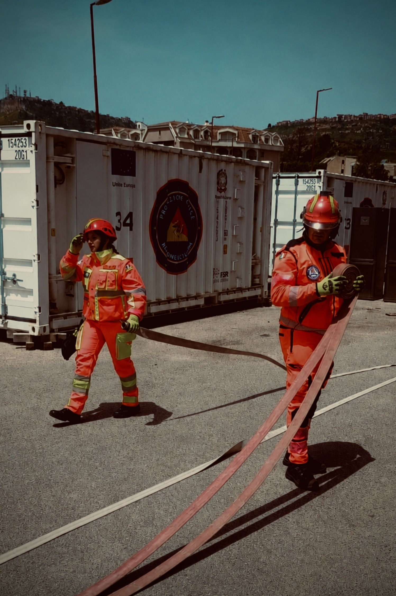
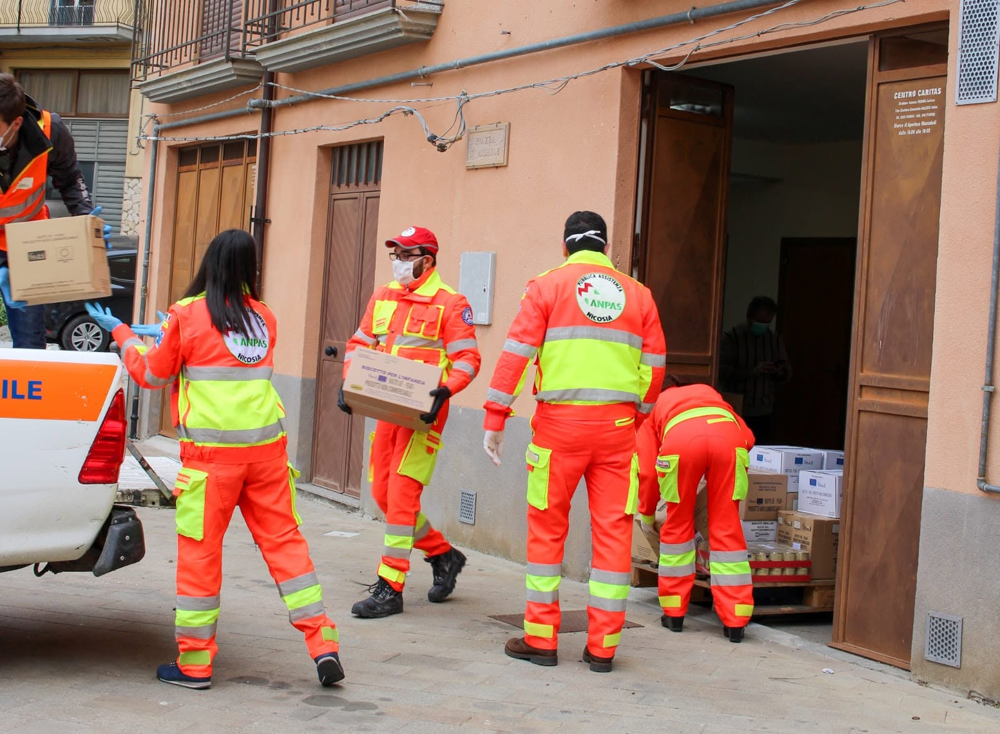
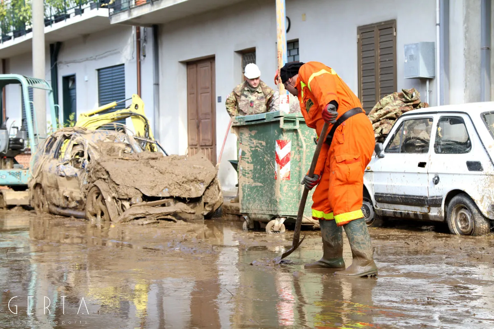
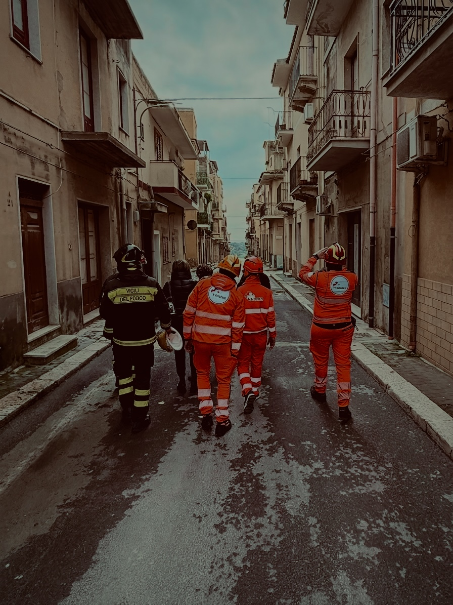
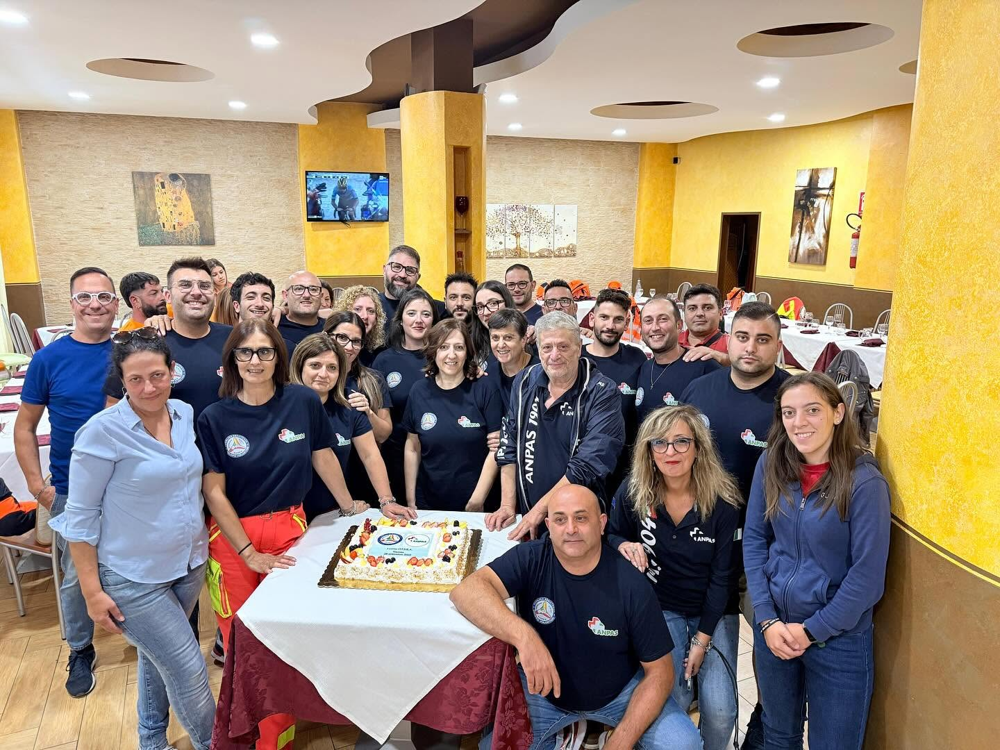

Come Nasce un'Identità di Soccorso
Dalle aule alla rete nazionale
La storia della nostra associazione trova la sua prima e più autentica matrice nell'anno 2009, all'interno delle aule formative del Comune di Nicosia. A seguito di un corso dedicato alla protezione civile, prendeva forma non un semplice gruppo di interesse, ma un vero progetto proiettato verso il futuro: una nuova associazione pensata sin dal principio per rispondere alle esigenze sociali, sanitarie e di tutela del nostro territorio.
Animati da una forte spinta ideale e dalla voglia di crescere secondo i più alti standard di operatività e trasparenza, abbiamo scelto subito di varcare i confini locali. Così, durante il 10° Meeting della Solidarietà svoltosi a Enna dal 20 al 24 maggio 2009, siamo entrati a far parte del movimento nazionale ANPAS, tramite il comitato regionale siciliano.

Il battesimo del fuoco a Giampilieri
Il 2009 non è stato soltanto l'anno della nostra fondazione, ma ha rappresentato anche il nostro drammatico "battesimo del fuoco". Il 1° ottobre una violenta ondata di maltempo scatenò colate di fango devastanti che travolsero Giampilieri Superiore, Scaletta Zanclea e altre frazioni a sud di Messina, causando 37 vittime.
Per i nostri volontari, all'epoca giovanissimi e alle prime armi, fu un impatto estremamente forte. Tutto quello che fino ad allora avevamo visto solo sulle slide di un monitor, divenne materia viva e cruda. Siamo stati catapultati nella vera essenza della protezione civile, imparando per la prima volta a canalizzare le nostre emozioni per tendere la mano a gente che aveva perso tutto e che doveva, necessariamente, rialzarsi.
Da quell'esperienza indelebile si è piantato dentro ciascuno di noi il seme indissolubile del nostro motto: essere pronti! Perché avevamo scelto di fare questo e, soprattutto, di essere questo.

Al fianco della Protezione Civile Siciliana
Contemporaneamente all'ingresso in ANPAS, per istituzionalizzare ulteriormente il nostro impegno, ci siamo iscritti al Dipartimento Regionale della Protezione Civile Siciliana (DRPC) con il numero di registro 1004.
Il DRPC ha competenza esclusiva in Sicilia, la struttura pubblica incaricata di proteggere la popolazione in un territorio ad altissimo rischio idrogeologico, sismico e vulcanico. Attraverso questa sinergia, ci siamo inseriti organicamente nella catena regionale che opera su tre fronti vitali:
- Previsione e Prevenzione: Monitoraggio dei rischi (meteo, incendi, eruzioni dell'Etna, frane) e mappatura dei territori fragili.
- Gestione delle Emergenze: Coordinamento dei soccorsi sul campo con Vigili del Fuoco, Forze dell'Ordine e Volontariato durante i disastri.
- Superamento dell'Emergenza: Gestione dei primi fondi per la ricostruzione, valutazione agibilità e opere di messa in sicurezza.

Saponara: un aiuto a 360 gradi
Quella stessa prontezza ci è stata richiesta il 22 novembre 2011, venendo rimessi alla prova da un evento analogo che colpì Saponara, sul versante tirrenico. Una frana di fango travolse il centro abitato provocando ingenti danni materiali e 3 morti, tra cui due fratelli.
Lì riuscimmo a essere utili nell'immediatezza dell'emergenza (scavando, montando tende e supportando le istituzioni locali), ma anche nel post-emergenza. Abbiamo allestito presso la nostra sede un centro di raccolta straordinario per abiti, viveri, prodotti per l'igiene e giochi per bambini, consegnandoli direttamente nelle loro mani per cercare di restituire quella parvenza di normalità perduta. Negli anni a seguire, la partecipazione a diverse emergenze regionali e nazionali ci ha fatto comprendere che metterci a disposizione degli altri era un qualcosa di cui non potevamo più fare a meno, ripagati sempre e solo dai sorrisi della gente.

L'evoluzione nel soccorso sanitario
Nel 2012 la nostra associazione ha compiuto un ulteriore passo vitale con l'acquisto della nostra prima ambulanza, avviandoci al mondo dell'assistenza sanitaria.
Grazie ai rigidi percorsi formativi di ANPAS Sicilia, ci siamo messi nelle condizioni di operare con il massimo della professionalità e sicurezza. Anche in questo settore avremmo innumerevoli storie da raccontare: i servizi infiniti, le notti insonni, le manifestazioni coperte. Tutto ciò ci ha permesso di comprendere le mille sfaccettature dell'assistenza al prossimo: trovare il modo giusto di gestire le ansie e le paure dei pazienti, senza mai sminuire il loro momento di sconforto, diventando la spalla solida che li sorreggeva e accompagnava.

Le grandi sfide sociali e idrogeologiche
Come tutti, abbiamo vissuto il periodo più spaventoso della storia moderna: la pandemia da Covid-19. Con il Comune e altre associazioni del territorio, abbiamo gestito un centro logistico di stoccaggio e consegna viveri destinato alle famiglie che, a causa del lockdown, non potevano lavorare e sostenere la spesa. Abbiamo toccato con mano la generosità delle persone, capaci di donare beni ed economia a sconosciuti. Di quel periodo potremmo raccontare mille storie: di ognuna di loro ricordiamo ancora oggi gli occhi che avevano mille sfaccettature, sguardi che ci hanno toccato profondamente e a cui abbiamo dato voce, anche alla più piccola.
Infine, in ordine cronologico, spicca l'emergenza per la frana di Niscemi del 25 gennaio 2026: un devastante disastro idrogeologico (un fronte di oltre 4 km con crollo di costoni di terra, strade e abitazioni finite nel vuoto) che ha provocato l'evacuazione di circa 1.300 persone (500 famiglie) e lo stato di emergenza nazionale. Accorsi tempestivamente, ci siamo messi a disposizione dei Vigili del Fuoco per evacuazioni e recupero beni. Parallelamente, abbiamo supportato il Comune, la PROCIV Niscemi e la rete ANPAS nell'allestimento del campo sfollati. Lì abbiamo accolto chi aveva perso la casa, affiancando figure professionali per aiutare le persone a 360 gradi, curando ogni aspetto fisico e mentale della tragedia.

L'Unione e la Fratellanza
Oltre alle emergenze affrontate e all'operatività sul campo, c’è un filo invisibile ma indissolubile che tiene insieme la nostra associazione: il valore dell'unione. Indossare la stessa divisa significa molto di più che condividere un turno. Negli anni, si è creato un vero e proprio rapporto di fratellanza. Nei momenti di pausa, nel silenzio surreale che segue la tempesta di un’emergenza o durante i lunghi viaggi, abbiamo imparato a metterci a nudo come persone, condividendo paure, fragilità e gioie quotidiane.
È proprio questa profonda empatia reciproca a renderci forti: la consapevolezza che, quando siamo là fuori a tendere la mano a chi soffre, possiamo contare ad occhi chiusi sulla persona che abbiamo al nostro fianco. Per noi il volontariato non è solo un servizio reso agli altri, ma un percorso umano che ci ha insegnato il valore della fiducia, dell'ascolto e dell'amicizia vera.
